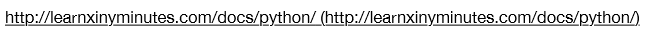

什么是爬虫？
我们把它定义为一个自动从网络获取数据的程序。
爬虫能干什么？
新闻数据：今日头条，实际上今日头条他们不做新闻编辑，他们的新闻来自后台的爬虫程序，从各大新闻网站上去把这些新闻下来，到它们自己的服务器上，然后做一些自己的分析，它们有一个特别的的功能就是会根据用户的习惯。比如你自己喜欢什么样的新闻，它就会给你推荐和你喜欢的新闻类似的新闻。
机器学习：股票数据获取及分析。我们的爬虫可以给机器学习提供一些数据来源，大家知道，训练一个机器算法需要大量的数据，我们的爬虫就可以获取这些数据，提供给机器训练。
网络搜索引擎的一个部件：我们看到的百度、搜狗，它们实际上是有一个爬虫的矩阵，它们是有一个服务器集群，去实现这个爬虫，它们不停的从互联网去扫描这些数据，去建立索引，提供给大家进行搜索。
培训对象
具有一定的python基础知识，想学习python在网络爬虫方面的基础知识的同学，如果没有python基础知识，有其他语言如java等经验也同样适合本课程。
培训目标
a)理解网络爬虫基础知识，会使用Python的一些标准库，urllib\urllib2\requests实现简单的爬虫应用。
b)掌握爬虫的程序结构和设计原则
c)掌握爬虫的程序调试工具和技巧
知识准备
前提：了解基本的Python语言知识。
推荐网站：

这个网站可以快速的去复习或者快速的去学习Python的基本语法，这里面还有一些免费的Python资源。
学习编程语言的方法就是你不停的去使用它。
如何获得帮助：
1.搜索引擎（推荐）
2.官方文档（推荐）
3.向人求助（不太推荐，效率会比较低）
课程内容
a）http协议介绍，http是非常重要的网络基础协议，爬虫就是全程为http协议打造的
b）Python标准库里对http的实现及用法
c）正则表达式，用来对爬下来的内容进行初步分析，获取我们想要的数据
d）多线程用来提高爬虫的执行效率，分布式爬虫简介
e）课程总结：回顾与展望
f）课程实例：文本数据，图片数据，AJAX数据
【本文由麦子学院独家原创，转载请注明出处并保留原文链接】